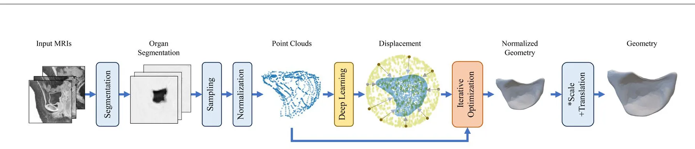
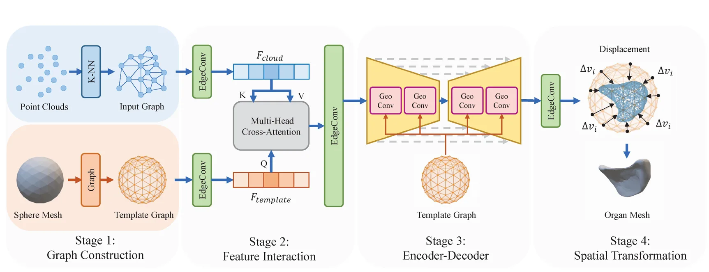

从 MRI 高保真三维重建盆腔器官：混合深度学习与迭代优化方法High-Fidelity 3D Geometric Reconstruction of Pelvic Organs from MRI: A Hybrid Deep Learning and Iterative Optimization Approach
主题是医学几何重建，与机器人 SLAM/GNSS 关系间接；可借鉴混合深度预测与迭代几何优化范式、网格质量评估和形状先验建模。
一句话工作总结
该工作用深度网络预测全局器官形态，再用迭代优化细化表面与网格，是医学场景的高质量三维几何重建方法。
摘要
从 MRI 构建患者特异的盆腔器官三维几何，对盆底建模和个体化分析很重要，但高保真、高质量几何重建仍然耗费人工且缺少标准流程。本文提出一个混合可变形形状建模框架，用于膀胱、子宫和直肠重建，结合深度学习预测与迭代优化。框架包含三部分：保持拓扑一致性的 geometry-aware multi-level 深度架构；平衡全局形状捕获和局部表面细化的两阶段 amortized optimization 训练策略；以及训练期用迭代优化监督深度学习、推理期先由深度网络快速预测全局形态再由迭代优化细化局部表面和网格质量的协同机制。实验显示其在 Chamfer Distance、Dice Similarity Coefficient 和体网格质量指标上优于主流深度学习器官重建模型。
Patient-specific 3D reconstruction of pelvic organ geometry from MRI is important for pelvic floor modeling and downstream patient-specific analysis. However, while previous studies have focused primarily on either image segmentation or downstream use of 3D models, the reconstruction of high-fidelity, high-quality geometries remains labor-intensive and poorly standardized. The study introduced a hybrid deformable shape modeling framework that integrates deep learning prediction with iterative optimization for the reconstruction of the bladder, uterus, and rectum. The framework consists of three core components: a geometry-aware multi-level deep learning architecture that preserves topological consistency of pelvic organs; a two-stage amortized optimization training strategy that balances global shape capture and local surface refinement; and a holistic synergy mechanism--where iterative optimization provides supervision for deep learning during the training phase, and during inference, deep learning rapidly predicts the global organ morphology, followed by iterative optimization to refine local surfaces and mesh quality. This framework demonstrated marked superiority in geometric fidelity than current mainstream deep learning-based organ reconstruction models. For individual anatomical structures, the reconstructed 3D geometries for the bladder, rectum, and uterus achieved significantly lower Chamfer Distance values and higher Dice Similarity Coefficient scores. In addition, while maintaining high computational efficiency, the proposed architecture yielded superior overall volumetric mesh quality. At the patient level, the framework achieved higher mean values for the 10 worst elements for both minSICN and minSIGE compared to traditional geometric post-processing algorithms.
中文解读摘录
- 链接：abs / PDF；作者：Hui Wang, Xiaowei Li, Chenxin Zhang, Yifan Feng, Jianwei Zuo, Yumeng Tang, Xiuli Sun, Jianliu Wang；类别：cs.CV, cs.AI, cs.CG, cs.GR；采集 score=11。
- 核心思路：从 MRI 重建膀胱、子宫、直肠等盆腔器官几何，结合深度网络的快速形状预测和迭代优化的局部表面/网格质量修正。
- 方法要点：geometry-aware multi-level 网络维持拓扑一致性；两阶段 amortized optimization 平衡全局形状与局部细节；训练期用迭代优化监督网络，推理期先网络预测再迭代细化。
- 关注点：这是医学几何重建，不是机器人三维重建；可借鉴的是“深度预测 + 可微/迭代几何优化”的混合范式，以及 Chamfer/Dice/体网格质量指标。
图表/页面预览
{kind=link}

{kind=link}
